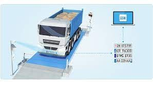
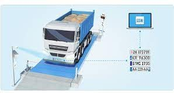

Detect Infinity
Security is an investment, not an expense
 

Mining operations are generally spread over a vast area in remote locations and harsh environments. Coal extraction is a high cost and increasingly high technology venture that requires the utmost operational efficiency as well as uninterrupted workflow and delivery cycles. Operations cannot afford to be impacted due to lack of visibility as to the location and status of machinery, equipment and vehicles, since this causes delays, increased cost and mounting losses and is also an open invitation to theft and misuse. Real-time location tracking and monitoring, especially of moveable assets such as the vehicle fleet transporting the coal, is thus of critical importance to the mining industry. There are almost more than 1000 cases where Tons of coal are being stolen by truck drivers and then they later sell these coal in the black market due to which the coal industry is facing a lot of losses. This has Tracking pickups and deliveries of thousands of truck-loads moving daily to and from various locations inside mining areas to processing plants, rail wagons or jetties is a logistics nightmare. I think this has to be stopped. So, that is why we decided to make a website in such a way that it stores all the databases, keeps track of the location and bring relief to the coal industry.


© Copyrights by Detect Infinity. All rights reserved